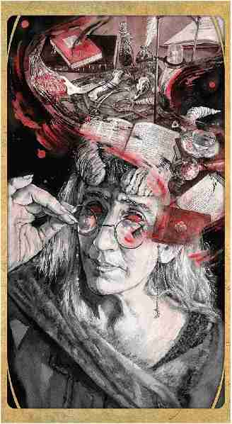

第七章：贤者 Sage（译注：此卡原名为大臣Vizier。）
贤者牌代表了奥术的智慧、远见和技能，在此基础上，本章探讨了一副牌中所包含的奥术的可能性。本章首先介绍了一个奥术角色的选项，包括一个专长，法术，以及由牌组提供的背景意见，为你的角色的故事增添了一种独特的风味。
本章以两个魔法物品结束：
万事万象无常牌Deck of Many More Things 由施法者创造的纸牌组成，他们试图将新纸牌添加到万事万象无常牌中。
奇迹牌组Deck of Wonder 是著名牌组中的一种不那么强大、也不那么危险的低级版，适合低等级的角色。